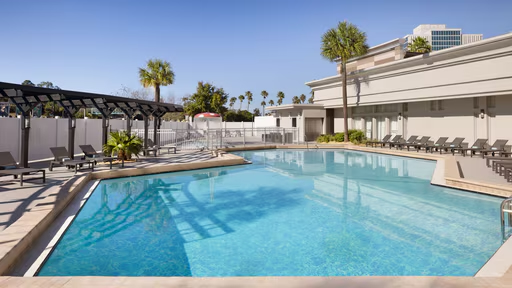
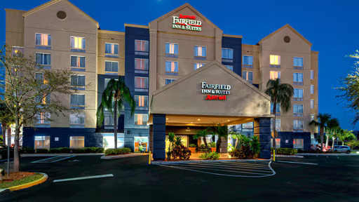
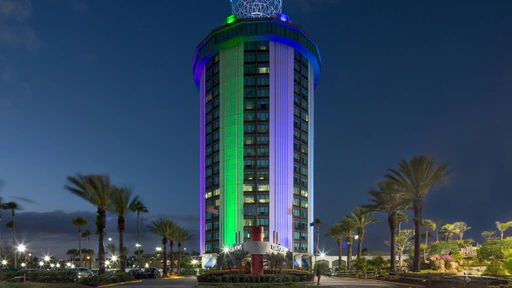
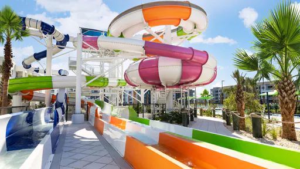

Courtyard by Marriott across Universal Orlando
3 restaurants, complimentary WiFi, Hourly parking: $0, daily parking: $30
This is 0.7 miles(5 minutes) away from Universal Orlando.
Rated 2.9 stars

3 restaurants, complimentary WiFi, Hourly parking: $0, daily parking: $30
This is 0.7 miles(5 minutes) away from Universal Orlando.
Rated 2.9 stars

Closest Marriott to Universal - Free Parking, Breakfast, and Theme Park Shuttle – Outdoor Pool
This is 1.1 miles(6 minutes) away from Universal Orlando Resort
Rated 3.8 stars

Extended stay hotel in Orlando near Universal with free breakfast, parking, and shuttle.
This is 1.2 miles(7 minutes) away from Universal Orlando Resort
Rated 4.3 stars

Universal Partner Hotel with shuttle to parks & Epic Universe.
This is 1.8 miles(7 minutes) away from Universal Orlando Resort
Rated 3.4 stars

Live life uninterrupted with our free breakfast, on-site fitness, business center, and Magic Tap Bar
This is 1.7 miles(10 minutes) away from Universal Orlando Resort
Rated 4.3 stars

Family resort near Universal with two and three bedroom suites with kitchen, a waterpark, and pool.
This is 2.5 miles(10 minutes) away from Universal Orlando Resort
Rated 4.1 stars

Stay close to Orlando’s top attractions with comfort, style, and value at City Express by Marriott!
This is 2.9 miles(9 minutes) away from Universal Orlando Resort
Rated 3.9 stars
Modern hotel near Universal Orlando Resort with 400 guest rooms, restaurants & bar on property.
This is 2.7 miles(9 minutes) away from Universal Orlando Resort
Rated 3.6 stars

Orlando hotel with spacious suites, fridge and microwave, free breakfast, near The Mall at Millenia.
This is 2.6 miles(13 minutes) away from Universal Orlando Resort
Rated 4.6 stars